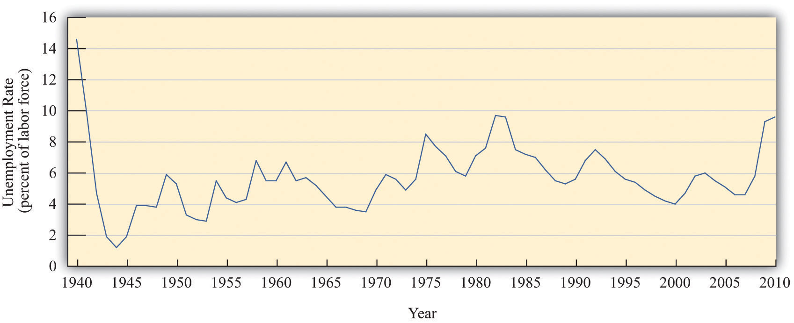
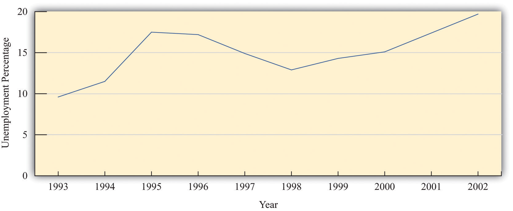
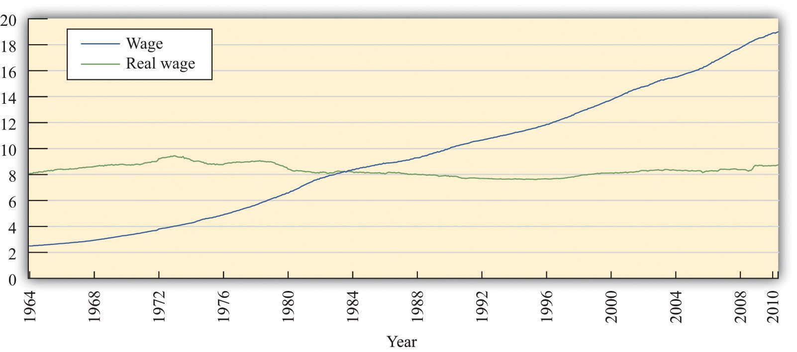

After you have read this section, you should be able to answer the following questions:
As you leave Argentina, you might well find yourself wondering about the implications of your work. You know that real GDP decreased, and from your study of the circular flow, you know that income decreased as well. Argentines have become poorer, as you might have guessed from the boarded-up stores you saw when you arrived in the country. You hope that, with the help of your observations, the International Monetary Fund (IMF) and the Argentine government will together find a way to enact good policies to increase the welfare—that is, happiness—of the individuals who live and work in the economy.
Our happiness is surely influenced by our material well-being—our ability to live in comfort; enjoy good food; have access to books, music, computers, and videogames; and so forth. In addition, it depends on our having the leisure time to enjoy these comforts; socialize with our friends; and go to movies, plays, and restaurants. However, our happiness depends on many other factors that are beyond the purview of economics and the influence of economic policymakers. Our happiness depends on our friends, families, health, and much more. Economics cannot help us very much with such matters. So, you wonder, is it enough to look at real GDP?
Real GDP is certainly a useful indicator of how well an economy is performing. This does not necessarily mean that it tells us about the welfare of those who live there. Some countries, such as China or India, have a large real GDP simply because they have large populations. Living standards in these countries are nonetheless relatively low because the large GDP must be shared by a very large number of people. To correct for this, we look at real GDP per person, which measures how much GDP would be available if we shared it equally across the entire population.
If two countries have substantially different levels of real GDP per person, we can fairly reliably infer that the richer country, by this measure, is also the country with higher living standards. Real GDP per person in Germany is about 25 times greater than real GDP per person in Kenya. Even a few minutes spent in the streets of Nairobi and Berlin would confirm that Germany enjoys much higher material living standards. However, when we compare countries with similar levels of real GDP per person, it is rash to assume that a richer country necessarily enjoys a higher standard of living. This is because there are several ways in which real GDP per person is flawed as an indicator of economic welfare.
Remember, first, that GDP measures market transactions only. National income accounts can measure activities that are traded only in markets. If people clean their own homes, tend their own gardens, repair their own cars, or cook their own meals, these activities are not included in our measurement of GDP. (There are a few exceptions. Most notably, GDP statistics impute a value to owner-occupied housing: GDP statistics effectively pretend that homeowners rent their houses from themselves.)
This leads to some unfortunate inconsistencies in GDP accounting. Suppose you and your neighbor both work as auto mechanics. If you each maintain and repair your own cars, these activities do not show up in GDP. But if you hire your neighbor to maintain your car, and she hires you to repair her car, then GDP does include this economic activity. Yet another possibility is that you barter with your neighbor, so she looks after your car and you look after hers but no money changes hands. Again, this work goes unrecorded in national accounts. Barter is more prevalent in developing countries than in developed countries and causes more of a problem for measurement of GDP in poorer countries. It is a particular source of difficulty when we want to compare economic activity in different countries.
People also value their leisure time. GDP measures the goods and services that people consume but does not tell us anything about how much time they must give up to produce those goods. For example, people in the United States are richer, on average, than people in Spain. But people in the United States work longer hours than people in Spain, and Spanish workers also enjoy much longer vacations. If we use measures of GDP to compare welfare in the United States and Spain, we will capture the fact that Americans can afford more DVD players, but we will miss the fact that they have less time to watch DVDs. GDP measures material well-being rather than overall welfare.
The economic activity that goes into the production of GDP also often has negative consequences for economic welfare that go unmeasured. A leading example is pollution. Coal-generated power plants generate sulfur dioxide as a by-product of the production of electricity. When sulfur dioxide gets into the atmosphere, it leads to acid rain that damages forests and buildings. This damage is not accounted for in GDP. Emissions from automobiles contribute to the buildup of greenhouse gases in the atmosphere, contributing to global climate change. They also generate smog (technically, particulate matter) that is damaging to health. These adverse effects are not accounted for in GDP.There have been many attempts by economists to amend the GDP measure to take environmental issues into account. For an early discussion on this issue, see William D. Nordhaus and James Tobin, “Is Growth Obsolete?” Yale University, Cowles Foundation paper 398, accessed June 28, 2011, http://cowles.econ.yale.edu/P/cp/p03b/p0398a.pdf.
Critics sometimes argue that GDP not only fails to measure negative effects from production but also erroneously includes measures taken to offset those measures. This criticism is misplaced. Consider the 2010 oil spill in the Gulf of Mexico. The environmental damage from that spill is not included in GDP, which is indeed a problem with using GDP to measure welfare. The costs of cleaning up the gulf are included in GDP, and the inclusion of cleanup costs does make GDP a better measure of welfare. To clean up means to produce a cleaner environment from a dirty environment, which increases economic welfare. The problem is the failure to include the original environmental damage, not the inclusion of the cleanup costs.
Finally, real GDP is an aggregate measure. It does not reflect the ways in which goods and services are distributed across the many households of an economy. In comparing two economies, we may feel differently about an economy in which resources are distributed relatively equitably compared to one in which some people are very rich and others are very poor, even if overall real GDP per person is the same. Similarly, we may feel quite differently about changes in real GDP depending on who is reaping the benefit of those changes.
In summary, real GDP is far from a perfect measure of economic welfare, but then again it is not designed to be. It is designed to measure economic activity, and it is—at best—an imperfect measure of material well-being. Nevertheless, when we want to understand what is happening to overall economic well-being or get an idea of comparative welfare in various countries, we begin with real GDP per person. For all its flaws, it is the best single indicator that we have.
Because real GDP is an imperfect a measure of well-being, we look at other statistics as well to gauge overall economic welfare. Here are some examples of economic statistics that we also use as indicators of economic welfare.
The unemployment rateThe percentage of people who are not currently employed but are actively seeking a job. is one of the most frequently cited statistics about the macroeconomy; it is the percentage of people who are not currently employed but are actively seeking a job. It signals the difficulty households face in finding employment. GDP data are reported on a quarterly basis only, but unemployment statistics are reported monthly and so contain more up-to-date information than GDP.Chapter 23 "Jobs in the Macroeconomy" contains more discussion of the definition and measurement of the unemployment rate.
Figure 18.15 "The Unemployment Rate in the United States" shows the unemployment rate in the United States from 1940 to 2010. On average, the rate of unemployment over this period was 6.0 percent. The unemployment rate was at its highest—14.6 percent—in 1940 and its lowest—1.2 percent—in 1944. The low unemployment in 1944 was largely due to World War II (and is an indication that low unemployment is not always a sign that all is well in an economy). From 1995 to 2008, the unemployment rate was never above 6 percent, but it jumped to 9.3 percent in the major recession of 2008 and by mid-2011 had still not fallen back below 9 percent.
Figure 18.15 The Unemployment Rate in the United States
Source: http://www.bls.gov/cps/home.htm
In the United States, defining and measuring the unemployment rate and other labor market variables is the job of the Bureau of Labor Statistics (BLS; http://www.bls.gov/cps/home.htm). Each month, about 60,000 households are asked about their recent employment experience. The BLS takes care to be sure that the sample is representative of the entire population of the United States. Notice that it is households who are interviewed, not people. So when a household is interviewed, information is acquired about all household members age 16 and over.To be more precise, in addition to being age 16 or older, the survey excludes people in an institution (such as prison) or in the armed forces. As a consequence of the interview, individuals are placed in one of three categories: (1) out of the labor force, (2) in the labor force and working, and (3) in the labor force and looking for a job. Similar surveys are conducted to measure unemployment in other countries.
The (civilian) labor forceAll (civilian) individuals who are either working or actively looking for work. is all individuals who are either working or actively looking for work. That is, it comprises all employed and unemployed workers. Individuals who are not in the labor force are neither employed nor looking for a job. These include those at school or choosing to stay at home. Individuals in the labor force are either employed or seeking work. Employment can be temporary or even part time; as long as someone has a job, he or she is counted as employed. Those who are not at work due to vacation, illness or family issues but who still have jobs are also counted as employed.
The other group in the labor force is a bit more problematic: what exactly does it mean to be looking for a job? The BLS considers you unemployed if you do not have a job and have been seeking one during the past four weeks. Here, “seeking” is intended to be active (going out for job interviews), not passive (reading want ads). Individuals on temporary layoff are considered to be unemployed even if they are not actively looking for a new job. The BLS does not directly ask individuals to classify themselves into one of these three categories. Instead, BLS interviewers ask a series of questions to facilitate the classification. The sum of the civilian labor force and those out of the labor force equals the civilian working age population. Figure 18.16 "The Unemployment Rate in Argentina" shows the unemployment rate in Argentina between 1993 and 2002. Unemployment was quite high throughout this period: it was in excess of 10 percent in every year from 1994 onward. In addition, the unemployment rate increased substantially in the period when real GDP was decreasing, from 12.8 percent in 1998 to almost 20 percent in 2002. The economic distress you witnessed on the streets of Buenos Aires is reflected in this statistic.
Figure 18.16 The Unemployment Rate in Argentina
The unemployment rate in Argentina was about 10 percent in 1993. It increased sharply over the next two years, decreased somewhat in the mid to late 1990s, and then increased again to almost 20 percent in 2002.
Source: Ministra de Economía y Producción de Argentina.
Average real GDP figures tell us nothing about how GDP is shared in an economy. They tell us how big the pie is but not who has the largest and smallest slices. Economists therefore also look at other measures that tell us about the economic environment as it is experienced by workers and households.
Wages in an economy provide a sense of how workers are doing. However, the wage in dollars—the nominal wage—is not the best indicator. While salaries and pay scales for jobs are quoted in dollar terms, decisions on whether or not to take a job and how many hours to work at that job depend on what those dollars can buy in terms of goods and services. If all prices in the economy were to double, then $10 would buy only half as much as it used to, so a job paying $10 an hour would seem much less attractive than it did before.
For this reason, we instead look at the real wageThe nominal wage (the wage in dollars) divided by the price level. in the economy. As with real GDP, real here refers to the fact that we are correcting for inflation. It is real wages—not nominal wages—that tell us how an economy is doing. To convert nominal wages to real wages, we need a price index, and because we are looking at how much households can buy with their wages, we usually choose the Consumer Price Index (CPI) as the index.
Toolkit: Section 31.3 "The Labor Market"
The real wage is the wage corrected for inflation. To obtain the real wage, simply divide the wage in dollars—the nominal wage—by the price level:
Figure 18.17 "Real and Nominal Wages" shows the nominal (hourly) wage paid to private sector industrial workers from 1964 to 2010. Over this period, the nominal wage rate increased almost eightfold from a low of $2.50 in January 1964 to nearly $19.00 by the end of the period.“Average Hourly Earnings: Total Private Industries” from the Bureau of Labor Statistics, The Employment Situation, which is seasonally adjusted. The CPI is the “Consumer Price Index for All Urban Consumers: All Items CPIAUCNS,” Bureau of Labor Statistics Consumer Price Index, 1982 − 84 = 100. The real wage series in Figure 18.17 "Real and Nominal Wages" shows the nominal wage divided by the CPI (times 100 so that the real and nominal wages are equal in the base year of the CPI). The nominal wage increased over this period by over five times, but the real wage actually decreased at times. It peaked at near $9.50 in 1973, decreased to $7.62 in 1995, and has risen only slowly since that time.
Figure 18.17 Real and Nominal Wages
Source: US Department of Labor, Bureau of Labor Statistics, http://stats.bls.gov/lpc/data.htm
It is a remarkable fact that, even though US real GDP is now more than 150 percent greater than it was in the early 1970s, real wages are still significantly lower than they were at that time. What is going on here? Part of the story is that other forms of nonwage compensation have become increasingly significant over the past few decades. The most important of these are health-care benefits. When these and other benefits are included, we find that overall compensation has increased reasonably steadily and is about 50 percent greater now than in the early 1970s.More precisely, real hourly compensation in the nonfarm business sector increased by 51.7 percent between 1970 and 2007. See “Labor Productivity and Costs,” Bureau of Labor Statistics, accessed June 28, 2011, http://stats.bls.gov/lpc/data.htm. Total compensation is, in fact, a better measure than real wages. Even so, total compensation has been increasing at a far slower rate than real GDP over the last few decades.
We turn finally to some noneconomic measures of societal welfare, such as statistics on health and education. Table 18.8 "Noneconomic Indicators of Welfare" shows some examples of indicators for four countries.“The World Factbook,” Central Intelligence Agency, accessed June 28, 2011, https://www.cia.gov/library/publications/the-world-factbook/index.html; “The Complete World Development Report Online,” World Bank, accessed June 28, 2011, http://wdr2011.worldbank.org/WDR2011_Data. Large differences in GDP per person, such as the difference between the United States and Argentina, are reflected in these other measures. GDP per person is about three times greater in the United States than in Argentina, and the United States also has higher adult literacy, higher secondary school enrolment, lower infant mortality, and higher life expectancy.
Table 18.8 Noneconomic Indicators of Welfare
| Indicator | United States | United Kingdom | Greece | Argentina |
|---|---|---|---|---|
| GDP per person, 2005 ($US) | 42,000 | 30,900 | 22,800 | 13,700 |
| Infant mortality rate, 2006 (deaths per 1,000 live births) | 6.43 | 5.08 | 5.43 | 14.73 |
| Life expectancy at birth, 2006 (years) | 77.85 | 78.54 | 79.24 | 76.12 |
| Adult literacy rate, 2003 (%) | 99.0 | 99.0 | 97.5 | 97.1 |
| Secondary school enrollment ratio, 2002–3 (%) | 88 | 95 | 86 | 81 |
Differences in GDP per person are a much less reliable guide when we compare relatively rich countries. For example, the United States has greater GDP per person than the United Kingdom or Greece. But both of those countries have lower infant mortality rates and higher life expectancy. They also have similar rates of literacy and school enrollment. In fact, based on these measures, the United Kingdom looks like a more attractive country to live in than the United States, even though its GDP per person is 25 percent lower.